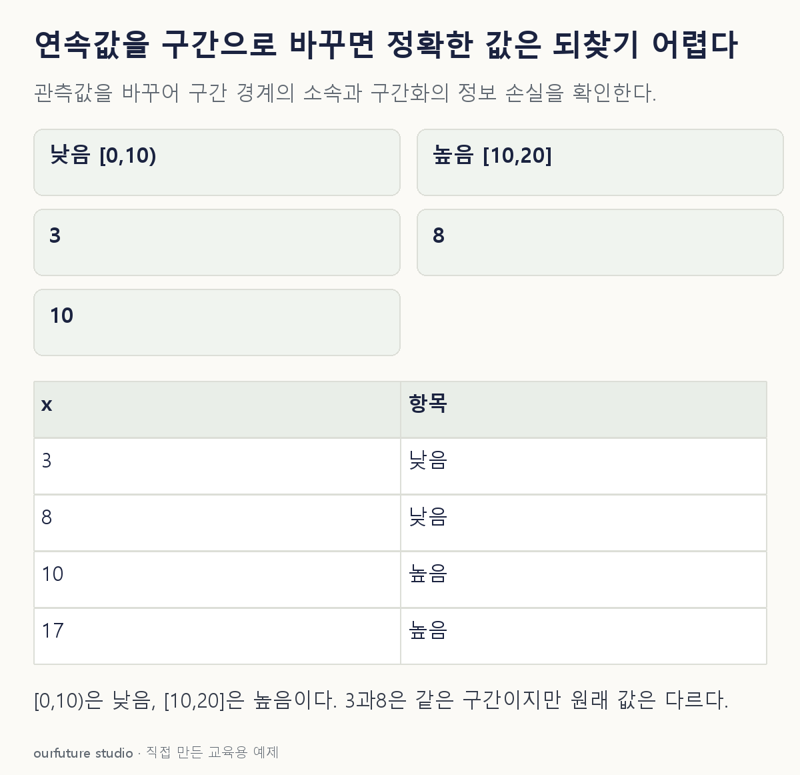

조건을 바꾸며 확인하기
명시한 두 구간만 사용한다. KBinsDiscretizer의 경계 학습이나 범위 밖 처리 전체를 복제한 기능은 아니다.
설명 그림과 비교하기
아래 그림과 표는 고정된 설명 예제입니다. 기본·변형 중 어떤 조건인지 캡션을 읽고, 바꾼 입력의 결과는 계산 칸에서 확인하세요.

같은 문제를 직접 골라 보기
[0,10)은 낮음, [10,20]은 높음으로 변환하고 구간 이름만 저장한다.
조건을 더 바꾸면?
원래 값이 10이면 어느 구간에 들어갈까?
변형 풀이 확인
높음
첫 구간은 10을 제외하고 두 번째 구간은 10을 포함한다고 명시했다.
같은 구간은 같은 원래 값을 뜻하지 않는다.